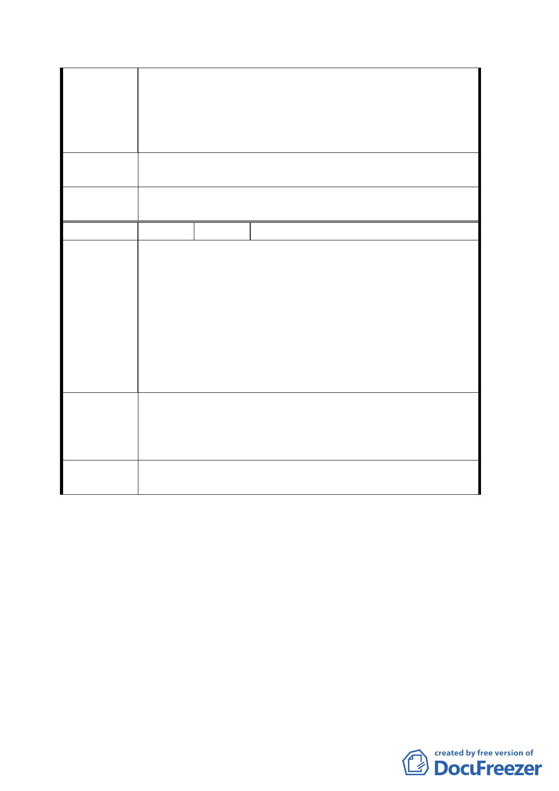

陳情理由
建議辦法
委員會議
決議
編號
陳情理由
建議辦法
委員會議
決議
一、本社區人口甚多、住家林立，較缺少活動空間。公共
活動空間可強化社區居民之互動，增進生活品質。
二、現代社會老年化日益嚴重，造成老年人厭世日多，其
主要原因之一為人際互動缺乏，若有較充分社區互動
場所，則可促使老年人互動交流。
建議將此處空間規劃為公園或社區活動中心供市民活動，
亦顯示市府重視社區生活品質之美意。
同編號 1。
３ 陳情人 閻中原
一、該地號位於本院（三軍總醫院）緊急發電機對側，醫
院發電機需定期運轉測試或遭逢停電時發動供電，屆
時會產生噪音及煙霧，雖本院已完成相關之管控，但
恐將造成未來住戶生活品質之影響。
二、由於醫院開設急診作業，配合規定須開設必要之替代
出口，而病患常圖就醫便利將機車於本院側門附近任
意停靠，再行徒步至急、門診區就醫，因此常造成溫
莎及蘭亭社區周邊道路髒亂與治安難以維持，未來若
該地號又變成住宅，勢必有更多的居民受害。
由於本院（三軍總醫院）目前之汽機車停車位已達飽和，
且短期間內無法新增停車位，建議將該用地改為收費停車
場，紓解側門民眾停車問題，既可減少未來住戶受害引發
一連串糾紛，同時亦改善周邊社區生活品質。
同編號 1。
討論事項二
案名：變更臺北市信義區信義段三小段五三之三四地號人行步
道用地為道路用地計畫案
說明：
一、本案係市府以九十三年十一月十日府都規字第○九三二
一五二六○○○號函送到會，並自九十三年十一月十一
日起公開展覽三十天。
二、法令依據：都市計畫法第二十七條第一項第四款。
三、申請單位：臺北市政府
三